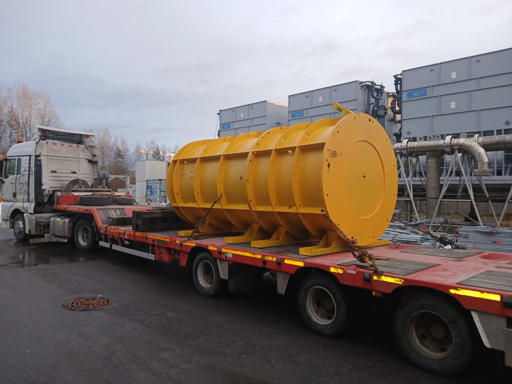
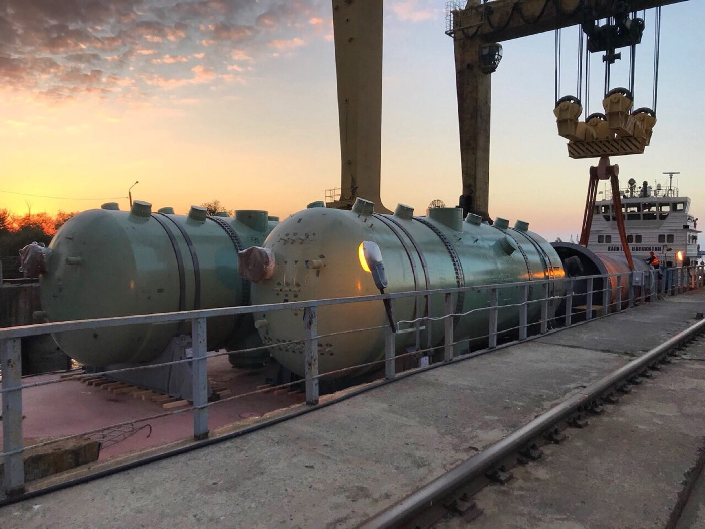
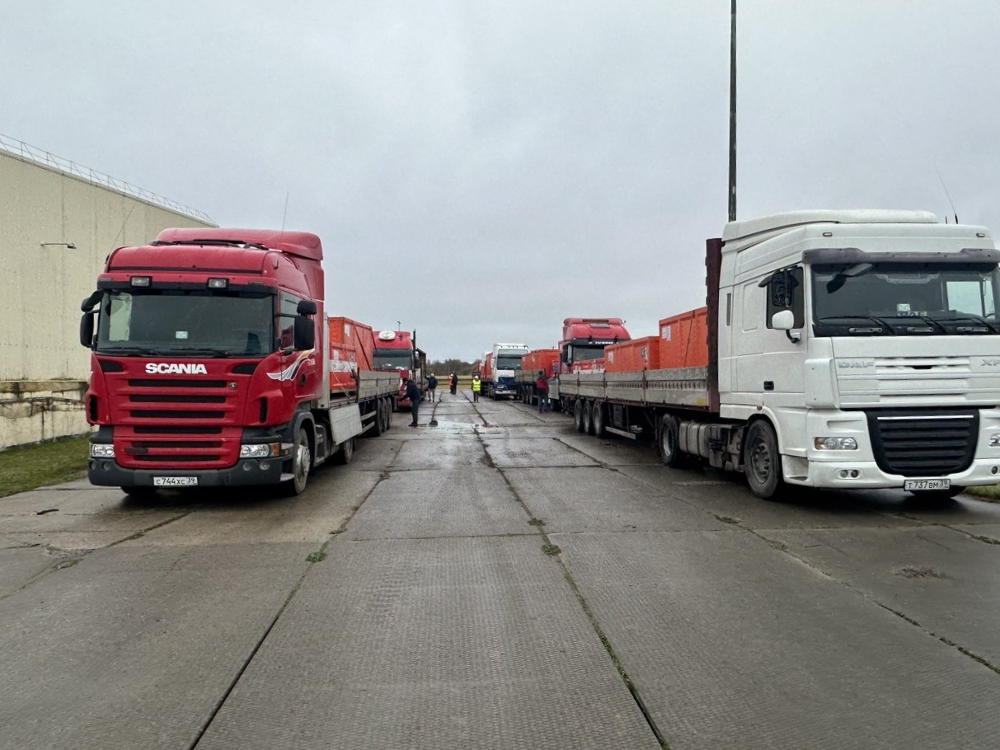
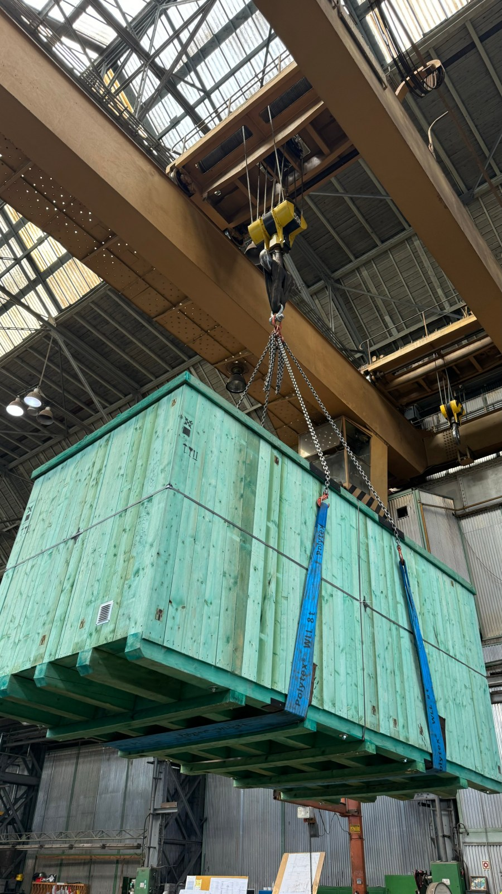
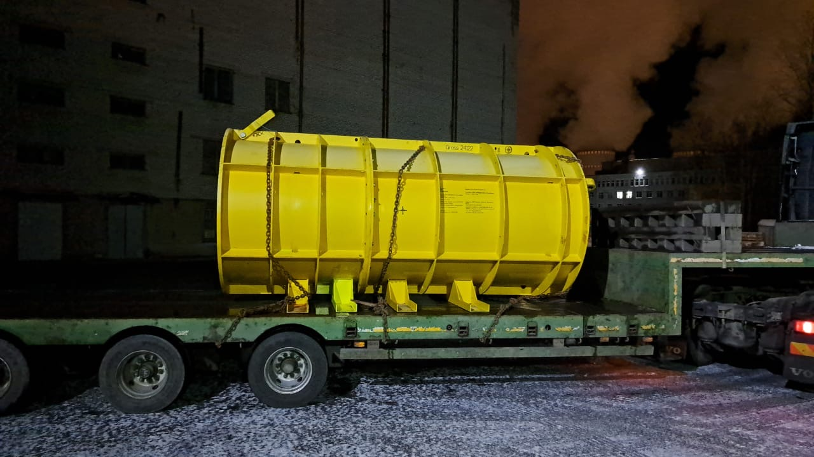
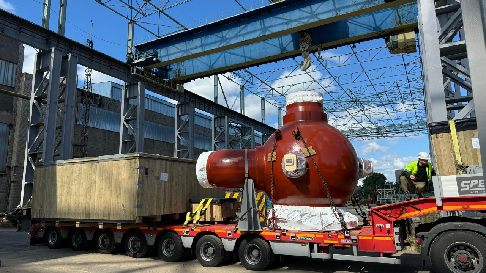
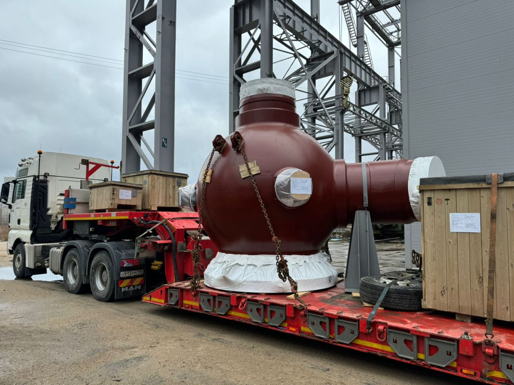

Закончен проект по доставке оборудования в адрес китайских АЭС.
Компанией «АЕТ Транс» было вывезено более 650 тн оборудования для строящихся в Китае Тяньваньской АЭС и АЭС «Сюйдапу».
О проектеВыполненные перевозки
Промышленное оборудование, международные маршруты и перевозки для энергетической отрасли.


Компанией «АЕТ Транс» было вывезено более 650 тн оборудования для строящихся в Китае Тяньваньской АЭС и АЭС «Сюйдапу».
О проекте
Компанией «АЕТ Транс» выполнена доставка оборудования из морского порта г. Калининград на строящуюся площадку завода литий-ионных батарей в Калининградской области. Работа продолжалась с августа 2025 г. по февраль 2026 г.
О проекте
Партия насосного оборудования общим весом 74710 кг была доставлена компанией «АЕТ Транс» из г. Будапешт, Венгрия в морской порт Бронка, г. Санкт-Петербург, Россия с использованием смешанного типа перевозки (авто-море-авто) для дальнейшей...
О проекте
В начале декабря 2024 г компания АЕТ Транс начала проект по доставке оборудования ГЦНА с производственной площадки АО «ЦКБМ» в г. Сосновый Бор.Общий вес оборудования составил 152592 кг.
О проекте
С августа по октябрь 2024 г. с производственной площадки филиала АО «АЭМ-технологии» «Петрозаводскмаш» отгружено и доставлено 4 комплекта оборудования «Корпус сферический с проставкой» общим весом 219145 кг. в Маньчжурию для Тяньваньской...
О проекте
Компанией АЕТ Транс было перевезено 3 комплекта оборудования ГЦН с производственной площадки Петрозаводскмаш (филиал АО «АЭМ-технологии») в порт Бронка для дальнейшей отправки в адрес АЭС Куданкулам, Индия. Общий вес отгруженного оборудо...
О проекте